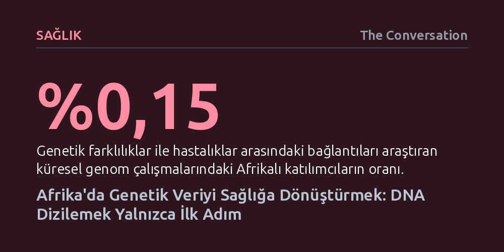

SAGLIK · The Conversation · 2026-10-12
Küresel genom çalışmalarının yalnızca %0,15'i Afrika kökenli bireyleri kapsadığı için mevcut genetik testler kıtadaki hastalarda yanıltıcı sonuçlar üretebiliyor. Afrika genelinde başlatılan ulusal projelerin klinik faydaya dönüşmesi ise sadece DNA dizilemeye değil, yerel uzmanlık ve veri yönetişimine dayanıyor.
Kişiselleştirilmiş tıbbın vaatleri, insanlığın genetik beşiği olan Afrika'daki çeşitliliği kapsamadığı sürece küresel ölçekte eksik ve yanıltıcı kalmaya mahkûmdur.

İnsan türünün kökeni Afrika kıtasına dayandığı için gezegenimizdeki en zengin genetik çeşitlilik de bu coğrafyada bulunuyor. Buna karşın, genetik biliminin son çeyrek asırdaki muazzam ilerlemesi neredeyse tamamen Afrika dışındaki toplulukların verilerine dayanılarak inşa edildi. Genetik farklılıklar ile hastalıklar arasındaki bağları araştıran geniş kapsamlı ilişkilendirme çalışmalarında Afrikalı bireylerin payı yüzde birin bile çok altında kalarak yalnızca binde bir buçuk (%0,15) düzeyinde seyrediyor.
Bu temsil eksikliği salt akademik bir eşitsizlik sorunu değil, doğrudan klinik sonuçları olan tehlikeli bir halk sağlığı açığı yaratıyor. Genetik testler bir hastanın DNA'sını yalnızca harf harf okuyabildiği için anlamlı hale gelmez; hekimlerin o harflerdeki varyasyonların bir hastalığa mı yol açtığını yoksa zararsız bir biyolojik çeşitlilik mi olduğunu ayırt edebilecek güvenilir referans verilerine ihtiyacı vardır. Nitekim geçmişte Afrika kökenli insanlarda kalıtsal bir kalp rahatsızlığına yol açtığı düşünülen bazı genetik değişimlerin, ancak Afrika kökenli popülasyonlara ait geniş genetik veriler incelendiğinde tamamen zararsız varyasyonlar olduğu anlaşılmıştı. Kıtadaki popülasyonlar küresel araştırmalarda temsil edilmediğinde, hatalı tanılar ve yanlış yönlendirilen tedaviler kaçınılmaz hale geliyor.
Bu derin bilgi açığını kapatmak amacıyla son yıllarda Afrika'nın dört bir yanında ulusal genom girişimleri filizlenmeye başladı. Tunus, Mısır ve Senegal kendi ulusal projelerini hayata geçirirken; Tanzanya, Kenya ve Güney Afrika gibi ülkelerde de devlet öncülüğündeki projeler hazırlık aşamalarını sürdürüyor. Kıtadaki moleküler genetik uzmanları, her ülkenin demografik yapısı, kaynakları ve sağlık öncelikleri farklı olduğu için tek tip bir genom projesi şablonunun tüm Afrika'ya uygulanamayacağını vurguluyor.
Geliştirilen bu girişimler incelendiğinde her ülkenin kendine özgü bir odak noktası belirlediği görülüyor. Tunus, hem sağlıklı bireyleri hem de belirli klinik tanı almış hastaları eş zamanlı inceleyerek zararsız varyantlar ile hastalık yapıcı mutasyonları ayırt etmeyi hedefliyor. Mısır ise çok daha geniş çaplı bir örneklemle hem yaygın hem de nadir hastalıkları haritalandırmaya odaklanıyor; ancak Mısır'ın önündeki temel sınav bu devasa ölçeği pratik sağlık kapasitesine dönüştürebilmek. Senegal ise coğrafi ve etnik temsiliyeti merkezine alarak 14 bölgesinin tamamındaki 31 ayrı etnolinguistik gruptan örnekler topluyor; bu sayede ulusal bir veri tabanının kırsaldaki ya da azınlıktaki toplulukları dışarıda bırakma riskinin önüne geçmeyi amaçlıyor.
Bir ülkenin binlerce yurttaşının DNA dizilimini çıkarması, kendi başına sağlık hizmetlerinin iyileşeceği anlamına gelmiyor. Daha önce kıta genelinde yürütülen H3Africa (Afrika'da İnsan Kalıtımı ve Sağlığı) gibi uluslararası girişimler, bölgede laboratuvar altyapısının kurulmasında ve araştırmacıların yetiştirilmesinde önemli bir zemin oluşturdu. Ancak ulusal genom projelerinin bu mirası devralıp ileri taşıyabilmesi için dizileme makinelerinden çok daha fazlasına ihtiyaç var.
Devasa veri yığınlarının klinik anlama kavuşabilmesi; gelişmiş bilişim sistemlerine, sonuçları yorumlayabilecek yetkin biyoinformatikçilere ve genetik bilgiyi hasta başında tedavi kararına dönüştürecek tıp profesyonellerine bağlıdır. Bunun yanı sıra genetik veri son derece mahrem ve hassas bir bilgi türü olduğundan, biyolojik örnekler toplanmadan önce açık rıza, gizlilik ve veri saklama standartlarının net bir şekilde belirlenmesi gerekiyor. Kıtadaki halkların kendi biyolojik mirasları üzerinde söz sahibi olabilmesi için uluslararası bilimsel iş birlikleri sürdürülürken, Afrika ülkelerinin kendi toplumlarından üretilen veriler üzerinde egemen denetim hakkını koruması şart koşuluyor.
Birçok Afrika ülkesi halihazırda sıtma, tüberküloz gibi bulaşıcı hastalıklarla, yetersiz sağlık personeli sayısıyla ve hızla artan kanser ile kalp-damar rahatsızlıklarıyla mücadele ediyor. Bu tablo karşısında, genomik araştırmaların bütçeler için diğer acil sağlık öncelikleriyle rekabet eden bir lüks gibi algılanması riski bulunuyor. Oysa uzmanlar, genom projelerinin diğer öncelikleri baltalamak yerine, tam da o topluma özgü yerel sağlık sorularına yanıt verecek ölçekte kurgulanabileceğini savunuyor.
Her ülkenin devasa bütçeli projelere girişmesi gerekmiyor; yerel önceliklere odaklanan, yönetilebilir ölçekteki adımlarla başlayıp kapasite arttıkça genişlemek çok daha gerçekçi bir yol haritası sunuyor. Bölgesel iş birlikleri sayesinde dizileme maliyetleri, bilişim altyapısı ve eğitim kaynakları ülkeler arasında paylaşılarak maliyetler düşürülebilir. En kritik risk ise kısa vadeli dış araştırma fonlarına bel bağlamak: Yalnızca dış hibelere dayanan projeler hibe süresi bittiğinde cihazları ve eğitilmiş personeli elde tutamamakta, bu da kıtadaki bilgi birikiminin kurumsallaşmasını engellemektedir.
Bir ulusal genom projesini değerlendirirken kamuoyunun başvurduğu en yaygın ölçüt, genellikle DNA'sı dizilenen toplam insan sayısı oluyor. Oysa projenin gerçek başarısı raflarda biriken dijital dizilimlerle değil, sıradan bir vatandaşın hayatında neleri değiştirdiğiyle ölçülmelidir. "DNA dizilemek yalnızca bir başlangıçtır" yaklaşımı tam olarak buna işaret eder: Elde edilen veriler kalıtsal hastalıklara sahip ailelere kesin teşhis sağlayabiliyor mu, hekimlerin hangi ilacın hangi hastada işe yarayacağını anlamasını kolaylaştırıyor mu ve proje bittiğinde geride kalıcı bir yerel sağlık altyapısı bırakıyor mu?
Afrika genom verileri küresel tıp bilimi için paha biçilmez bir değer taşısa da, bu veriyi sağlayan toplulukların doğrudan fayda görmediği bir araştırma modeli etik açıdan sürdürülemez. Genom projeleri sağlık sistemlerini bir gecede dönüştürmeyecek; ancak toplumsal güven, yerel ihtiyaçlar ve kesintisiz kurumsal yatırımlarla desteklendiğinde, Afrika insanının kendi biyolojik çeşitliliğine uygun, adil ve etkili bir sağlık hizmetine kavuşmasının kapısını aralayacaktır.